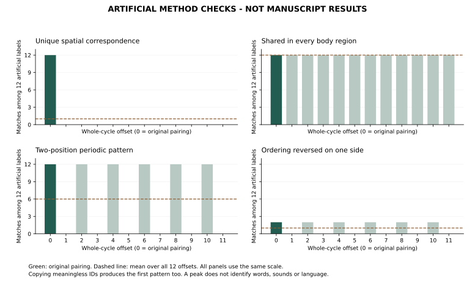

先看文字在哪里，
再问它说了什么。
圆图的空间与次序，能否约束文字的功能？本轮从全部十二处固定位置出发，核对图形角色、双版原文和完整闭环，再检查真实已知语言的对照。
第三个七小时窗口
2026-11-18 · 16:14:17–23:14:17 UTC
芝加哥 · 10:14:17–17:14:17 CST
读取发布记录
本页展示已发布时点的记录。刷新只读取新发布的内容，不监视后台，也不推算完成百分比；固定截止时间不会因更新而延长。
正在读取本轮记录。
目前能确认到哪一步？
- 尚未确认语义。请以成功读取的发布记录为准。
图形可比 → 文字定位 → 字形读法 → 文本功能 → 词义。每一层都需要自己的证据；邻接、同形或重复都不能直接替代名称识别。
把观察框放回原图比较
本轮主要研究对象在大画布右侧。默认保留无框原图；选择图层后才叠加近似阅读框。不同观察的分组差异保留，不将框视作正确答案。

五组记录，分别核查
每组可展开原行、具体观察和来源。待核的记录保留为待核，不用示例或零分填充。
什么样的“匹配成功”仍然不能算破译？
以下全部是人工构造的12项例子，没有使用手稿词串。绿色表示原位对应，横轴表示把一侧整体错开几位，虚线是所有错位的平均值。点击图表可查看大图。

标签和正文同时换起点或同时反向，不改变原位对照结论；只转动其中一侧会改变相对对应。这里的反向只指沿圆图的遍历方向，不包括把词内字序倒读。缺失项也不能当作“未命中”填零。上述数学性质与反例不能替代原图的角色和边界核查。
计划与停止门槛
任一固定位置的角色或完整循环支持不足，完整十二主检验停止；保留缺口，不删难例。伏尼契文本主检验仍受这些门槛约束；已知拉丁文风图已按另行冻结的条件协议完成有限校准。
展开完整七小时计划
计划正在读取。
展开第一阶段测量协议
协议正在读取。
下载与具体来源
查看本次发布采用的文件与核验标识
这里列出实际读取的明确文件，不据目录内容自动推断研究进展。